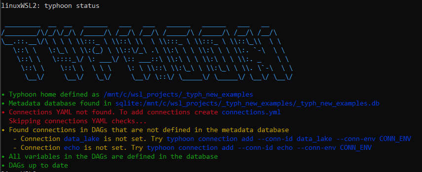
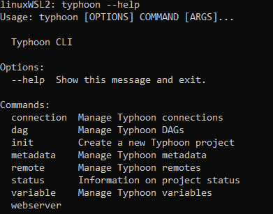
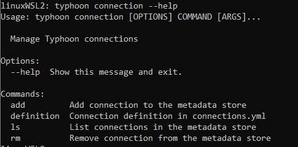
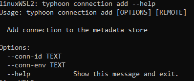
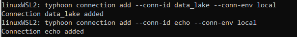
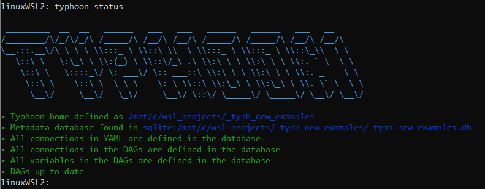
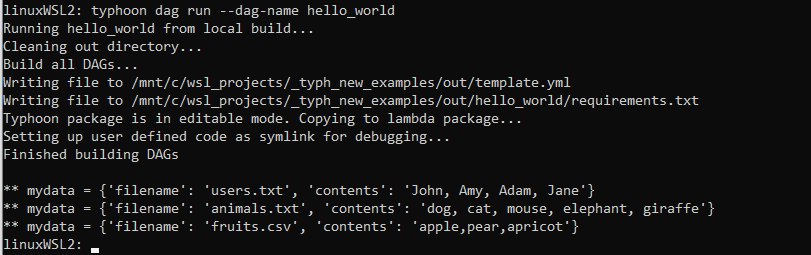
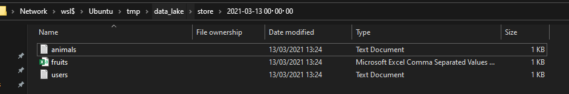

Hello World - a non-trivial example
This tutorial will take you through how to write a simple (but non-trivial) Hello World example.
This is the final DAG we will build. We will step through each part below. The DAG takes a YAML list of dictonaties (our data) and writes each dictionary to a file. It stores the file by run_date (hourly).
name: hello_world
schedule_interval: rate(1 hours)
granularity: hour
tasks:
send_data:
function: typhoon.flow_control.branch
args:
branches:
- filename: users.txt
contents: John, Amy, Adam, Jane
- filename: animals.txt
contents: dog, cat, mouse, elephant, giraffe
- filename: fruits.csv
contents: apple,pear,apricot
write_data:
input: send_data
function: typhoon.filesystem.write_data
args:
hook: !Hook data_lake
path: !MultiStep
- !Py $BATCH['filename']
- !Py $DAG_CONTEXT.interval_end
- !Py f'/store/{$2}/{$1}'
data: !Py $BATCH['contents']
create_intermediate_dirs: True
Creating a Task
name: hello_world
schedule_interval: rate(10 minutes)
granularity: hour
Very simply this sets you flow name (no spaces) and the schedule interval in a rate to run at. It will use a timestamp truncated to the hour for the intervals.
tasks:
send_data:
function: typhoon.flow_control.branch
args:
branches:
- filename: users.txt
contents: John, Amy, Adam, Jane
- filename: animals.txt
contents: dog, cat, mouse, elephant, giraffe
- filename: fruits.csv
contents: apple,pear,apricot
Here we are setting up our tasks in our flow. This is a DAG structure similar to many other workflow tools (e.g. Task A → Task B → Task C).
Lets examine our first task, send_data, which simply outputs 3 'files' containing CSV formatted strings represented as a YAML list of dictionaries. We use flow_control.branch to yield our 3 branches to the next node.
Connections & typhoon status
Lets start now by building this very basic task, and inspecting the output using a few options.
First in your terminal, in the directory you have initialised your project, use typhoon-cli to run typhoon status.

We encourage you to run this after your steps to see if any errors, or unset variables are there.
Here we can see that we are initially missing a connection file without connections so lets add this.
You need to add a connections.yml file to the root directory of your typhoon project.
In this case we are calling our data_lake which is a local filesystem in local and a cloud S3 bucket in prod. To choose our environment we simply swap connections. We will also add an echo connection which we will use in a moment.
echo:
local:
conn_type: echo
data_lake:
prod:
conn_type: s3
extra:
base_path: /
bucket: test-corp-data-lake
region_name: eu-west-1
login: <your login>
passowrd: <your key>
local:
conn_type: local_storage
extra:
base_path: /tmp/data_lake
Now we have this lets add our missing connections.
We can get help on the client by using typhoon —-help

And then typhoon connection -—help

Finally, we can use typhoon connection add --help

So now we can see how to add our connections from the connections.ymlfile. Note the local environment.
typhoon connection add --conn-id data_lake --conn-env local
typhoon connection add --conn-id echo --conn-env local

Now again typhoon status

A Ok!
Build, Run and debug
Let's build our hello_world DAG and see some output. As a quick way lets add on echo task after our send_data task:
echo_my_output:
input: send_data
function: typhoon.debug.echo
args:
mydata: !Py $BATCH
$BATCH is the data packet as a consistent default reference.
It can be any type so depending on your data can be shaped differently. e.g. $BATCH['key], $BATCH[0] etc.
Lets build it in typhoon-cli! We can skip the help as you can now navigate the cli help the same way as for connections (hint: typhoon dag --help)
typhoon dag build hello_world
... and run it
typhoon dag run --dag-name hello_world

Output of the YAML list as a list of dictionaries
Now we can see what will be passed to the next node (which in our case is just echoing to the prompt).
Writing to a file
write_data:
input: send_data
function: typhoon.filesystem.write_data
args:
hook: !Hook data_lake
path: !MultiStep
- !Py $BATCH['filename']
- !Py $DAG_CONTEXT.interval_end
- !Py f'/store/{$2}/{$1}'
data: !Py $BATCH['contents']
create_intermediate_dirs: True
Our next task write_data receives each branch (asynchronously - more on this later for performance) from its input task. Setting a task as an input creates an edge for the data to flow linking them:
send_data → write_data
Next you notice we are writing to a filesystem using a standard python function filesystem.write_data. Into this function we are passing 3 arguments, the connection hook, a transformation of the data, and the path (similar to airflow ones - reusable?),
Introducing our built in context variables
- $BATCH: This is the data package passed to the next node.
- $BATCH_NUM: This is the iterator number if you are batching (queries for example).
- $HOOK: This represents your hook - you can use
!Hook my_connas syntax sugar or!Py $HOOK.myconn - $VARIABLE: This is how you can access saved variables e.g. lists of tables, query templates etc. An example might be
!Py $VARIABLE.mysql_read_3.format(table_name=$BATCH) - $DAG_CONTEXT.interval_start & $DAG_CONTEXT.interval_end: Execution interval for example:
- $DAG_CONTEXT.interval_start → '2021-05-23 10:00:00' (inclusive)
- $DAG_CONTEXT.interval_end → '2021-05-23 11:00:00' (exclusive)
Passing data
- The notation
!Pyindicates that what comes after is evaluated as normal python code. - $BATCH is the data packet as a consistent default reference. It can be any type so depending on your data can be shaped differently e.g. $BATCH['key], $BATCH[0] etc.
In our case remember each branch yields a list of dictionaries with two keys
[{'filename': 'users.txt', 'contents':'['John', 'Amy', 'Adam', 'Jane']},{'filename':...}]
The most complex item here is a !Multistep process showing how you can do multiple small python transformations in series in a a nice readable way (or you can put it in one line of course):
!Py $BATCH['filename']will evaluate to "users.txt'!Py $DAG_CONTEXT.interval_endwill evaluate to the timestamp of the DAG run. This is a built in context variable.!Py f'/store/{$2}/{$1}'finally this references the first two lines (1, 2) and uses a normal Python f-string to make the path. Evaluating to '/store/ 2021-03-13T12:00:00/users.txt'
Lastly we want to deliver the right data, which is the 'contents' key:
data: !Py $BATCH['contents']
Here is our result!

Animals and fruits, along with our users!